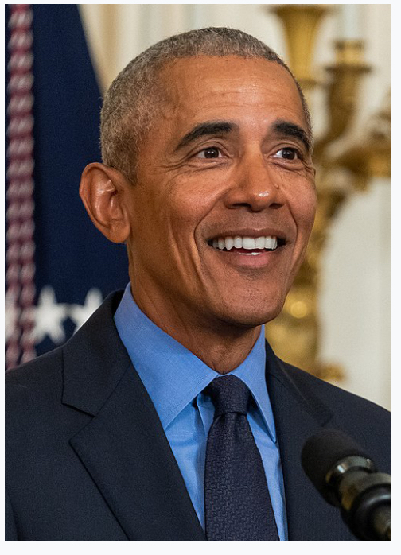
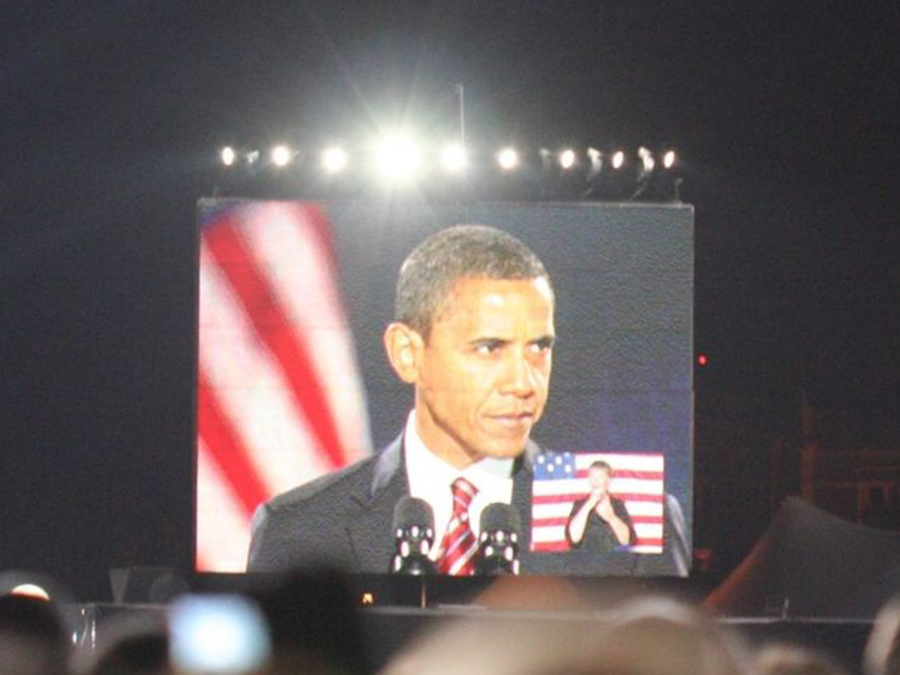

Barack Obama, de son nom complet Barack Hussein Obama II, est né le 4 août 1961 dans la ville d'Honolulu (sur l'île d'Oahu, à Hawaï),🌺dans un milieu modeste. Ses parents, Barack Obama I et Ann Dunham divorcent lorsqu’il n’avait que 2 ans.Sa famille déménage à Jakarta, en Indonésie🇮🇩, en 1967. Barack Obama y est élevé par sa mère et son beau-père jusqu'à l'âge de 10 ans, âge auquel il revient aux États-Unis et est accueilli par ses grands-parents maternels.Obama fait ensuite des études de science politique à l'université Columbia, à New York🗽.Il choisit comme spécialité les relations internationales.
électorales. C'est dans ces quartiers que Barack Obama fait construire la maison dans laquelle il vit actuellement avec sa famille. Il part étudier le droit à Harvard. Il défend les victimes des discriminations raciales. En 1996, Obama est élu au Sénat de l'État de l'Illinois, dans le 13e district de Chicago, dans des banlieues sud de Hyde Park. Il est réélu en 1998 et en 2002. Il est catalogué comme libéral, aussi bien sur le plan social qu'économique. Durant ses mandats, il préside la commission de santé publique et réforme en partie le système de santé. Il renforce les aides d'État en faveur des travailleurs à faibles revenus. Il fait voter une réforme sur l'application de la peine de mort dans l'Illinois. Aux États-Unis, les deux grands partis organisent des primaires pour désigner leurs candidats à l'élection présidentielle. Plusieurs hommes politiques du Parti démocrate se présentent pour devenir candidat. En juillet 2004, durant la campagne électorale présidentielle, Barack Obama soutient John Kerry. Il fait un discours remarqué. Voilà ce qu'il dit sur la guerre en Irak : Quand nous envoyons nos jeunes hommes et femmes sur le front, nous avons l'obligation solennelle de ne pas éluder le nombre ni cacher la vérité sur les raisons pour lesquelles ils s'engagent ; de prendre soin de leur famille alors qu'ils ne sont plus là ; de s'occuper des soldats à leur retour ; et de ne jamais, plus jamais se lancer dans une guerre sans troupes suffisantes pour gagner, assurer la paix et gagner le respect du monde.Il devient professeur de droit,puis avocat👨🏾🏫. En 1984, il y travaille comme animateur social dans les quartiers noirs pauvres.Le 16 janvier 2007, il déclare officiellement être candidat à l'élection présidentielle de 2008.C'est le premier homme politique Afro-Américain après Jesse Jackson en 1984 et 1988 à avoir une chance d'accéder à la présidence des États-Unis d'Amérique. Sa candidature a le soutien d'une partie des électeurs indépendants et des jeunes
